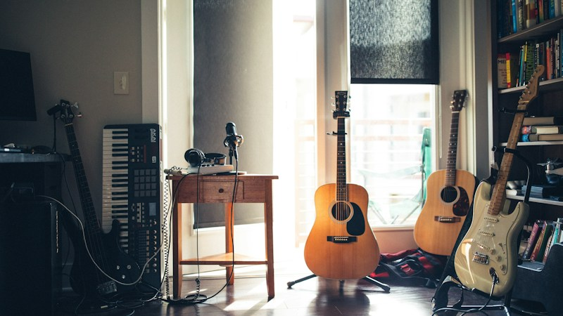

Top gewild

Alles
Musiek
Nuus
Regstreeks
Amapiano
Speletjies
Komedie
Sport
SA Stories
Jozi
Kaap

12:34Hoe om jouself bekend te maak — ZAZISE-skepperwenke
ZAZISE Creators
125K kyke · 2 dae gelede
125K kyke · 2 dae gelede

 8:02
8:02Sonsondergangrit deur Kaapstad — 4K
Cape Stories
89K kyke · 5 dae gelede
89K kyke · 5 dae gelede

 4:18
4:18Amapiano-mix 2026 — lewendige sessie van Jozi
Jozi Beats
210K kyke · 1 week gelede
210K kyke · 1 week gelede

 22:01
22:01Straatkos-toer: Durban-speseryemarkte
SA Eats
54K kyke · 3 dae gelede
54K kyke · 3 dae gelede

 15:47
15:47Bou 'n opstart in Johannesburg
Biz Afrika
31K kyke · 4 dae gelede
31K kyke · 4 dae gelede

 9:55
9:55Rugbyhoogtepunte — Springboks-naweek
Sports ZA
402K kyke · 1 dag gelede
402K kyke · 1 dag gelede
 6:30
6:30Leer isiZulu in 10 minute
Language Lab
67K kyke · 6 dae gelede
67K kyke · 6 dae gelede
 18:12
18:12Natuurlewe-kameravalle — Kruger Nasionale Park
Wild South
148K kyke · 2 weke gelede
148K kyke · 2 weke gelede